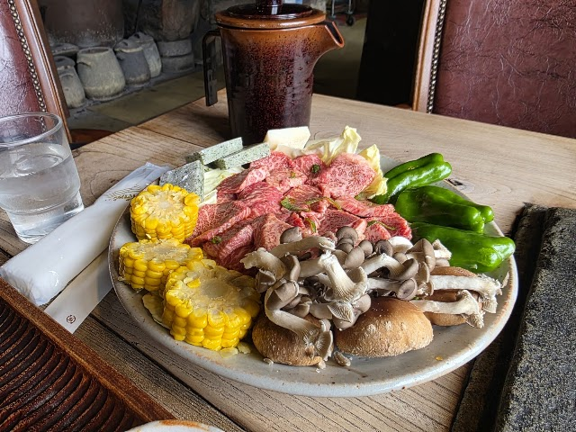
| 営業時間 | 月・水・木・金・土・日 10:30〜20:30 |
|---|---|
| 定休日 | 火曜 |
| 住所 | 茨城県つくば市臼井２１０３−５ |
| 予約 | 可 — ☎ 029-866-1221 ／ 公式サイト |
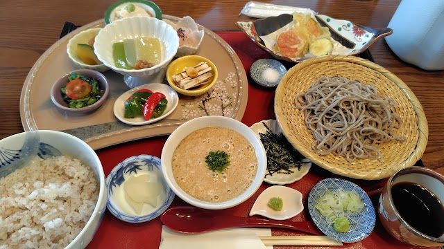
| 営業時間 | 火・水・木・金・土・日 11:30〜19:00 |
|---|---|
| 定休日 | 月曜 |
| 住所 | 茨城県つくば市沼田１４４１−１ |
| 予約 | 可 — ☎ 029-866-0068 ／ 公式サイト |
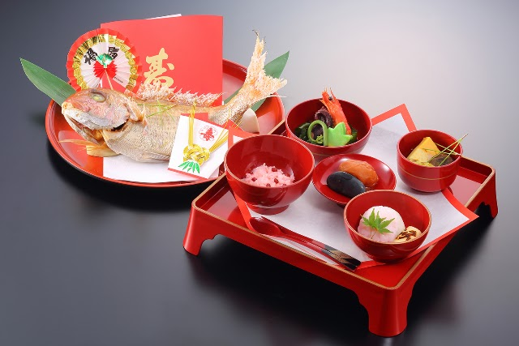
| 営業時間 | 月・火・木・金・土・日 11:00〜15:30, 17:00〜21:30 |
|---|---|
| 定休日 | 水曜 |
| 住所 | 茨城県つくば市小野崎２５４ |
| 予約 | 可 — ☎ 029-855-8181 ／ 公式サイト |
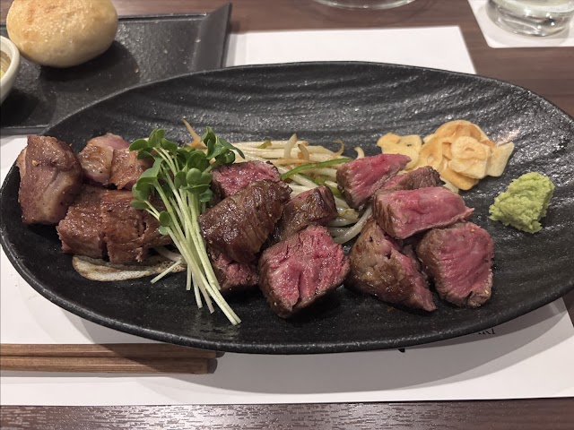
| 営業時間 | 月・木・金・土・日 11:30〜14:00, 17:00〜22:00 |
|---|---|
| 定休日 | 火・水曜 |
| 住所 | 茨城県つくば市研究学園５丁目１４−３ |
| 予約 | 可 — ☎ 029-858-1129 ／ 公式サイト |
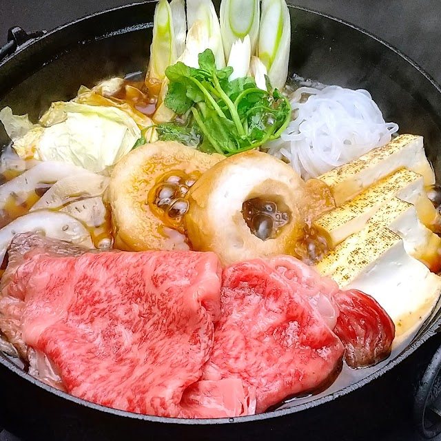
| 営業時間 | 月・火・水・木・金・土・日 11:30〜15:00, 17:00〜23:00 |
|---|---|
| 定休日 | なし(要最終確認) |
| 住所 | 茨城県つくば市研究学園５丁目8−４ ホテルベストランド 1F |
| 予約 | 可 — ☎ 029-863-1567 ／ 公式サイト |
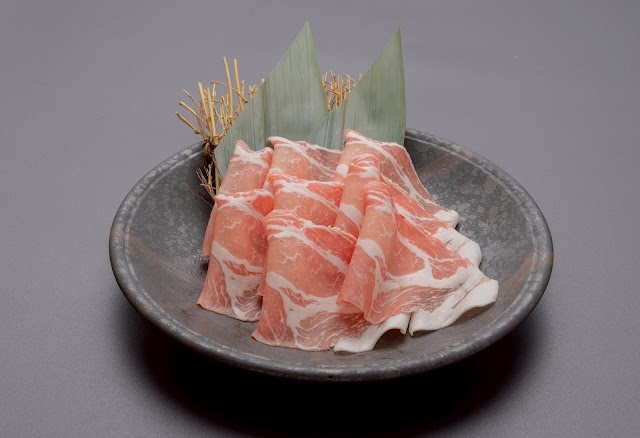
| 営業時間 | 月・火・水・木・金・土・日 17:00〜0:00 |
|---|---|
| 定休日 | なし(要最終確認) |
| 住所 | 茨城県つくば市研究学園５丁目14−３ Liberta, 1階 |
| 予約 | 可 — ☎ 029-828-8298 ／ 公式サイト |
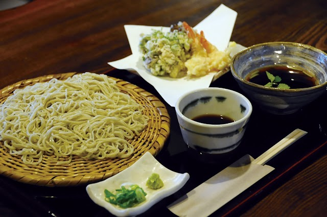
| 営業時間 | 月・水・木・金 11:00〜15:00 ／ 土・日 11:00〜20:00 |
|---|---|
| 定休日 | 火曜 |
| 住所 | 茨城県つくば市柳橋４９６ |
| 予約 | 要確認 — ☎ 029-886-5006 ／ 公式サイト |
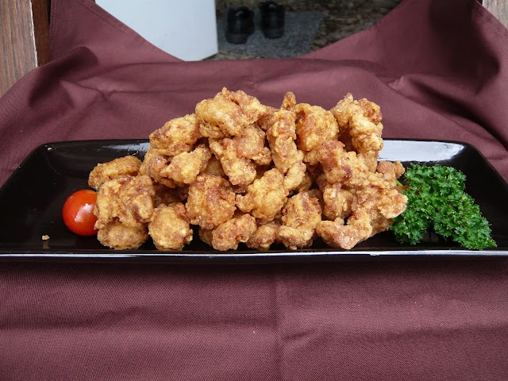
| 営業時間 | 火・水・木・金・土 10:00〜20:00 ／ 日 10:00〜19:00 |
|---|---|
| 定休日 | 月曜 |
| 住所 | 茨城県つくば市松野木９３−３ |
| 予約 | 可 — ☎ 029-836-4989 ／ 公式サイト |
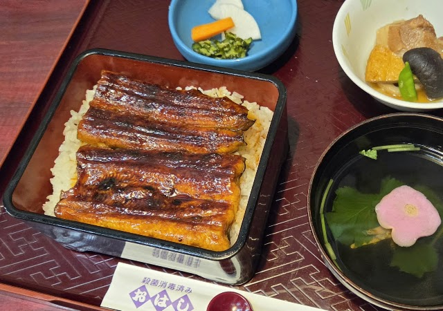
| 営業時間 | 月・火・木・金・土・日 11:00〜21:30 |
|---|---|
| 定休日 | 水曜 |
| 住所 | 茨城県つくば市栗原４０９５−１ |
| 予約 | 可 — ☎ 029-864-2310 ／ 公式サイト |
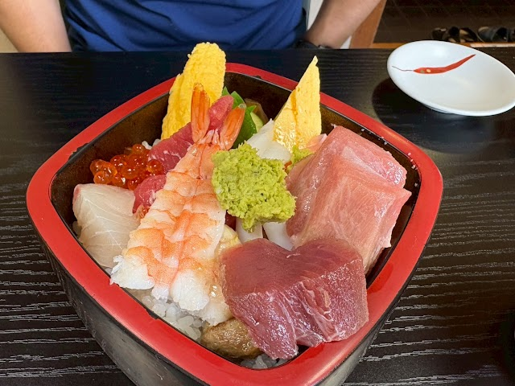
| 営業時間 | 火・水・木・金・土・日 11:00〜13:00, 17:00〜20:00 |
|---|---|
| 定休日 | 月曜 |
| 住所 | 茨城県つくば市竹園１丁目８−８ |
| 予約 | 可 — ☎ 029-852-6222 |
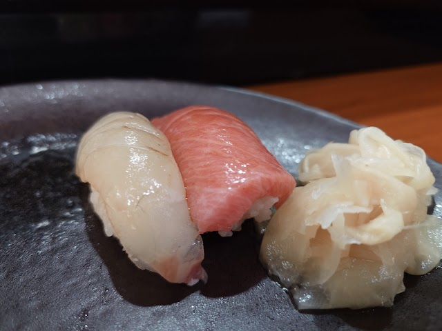
| 営業時間 | 月・火・水・木・金・土 12:00〜13:30, 17:30〜22:00 |
|---|---|
| 定休日 | 日曜 |
| 住所 | 茨城県つくば市竹園３丁目１８−２ |
| 予約 | 可 — ☎ 029-852-2727 |
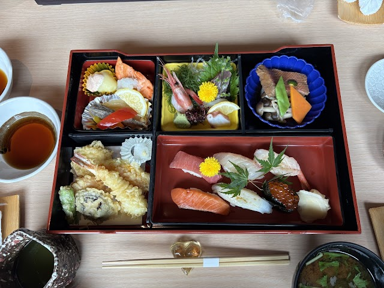
| 営業時間 | 月・火・水・木・金・土・日 11:30〜14:00, 17:00〜22:00 |
|---|---|
| 定休日 | なし(要最終確認) |
| 住所 | ホテルベストランド, 2F, ５丁目-8-4 研究学園 つくば市 茨城県 305-0817 日本 |
| 予約 | 可 — ☎ 029-896-5550 ／ 公式サイト |
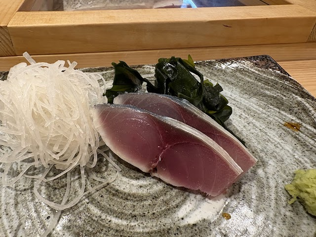
| 営業時間 | 月・木・土・日 17:30〜22:00 ／ 火・金 11:00〜14:30 |
|---|---|
| 定休日 | 水曜 |
| 住所 | 茨城県つくば市二の宮３丁目17−２０ |
| 予約 | 可 — ☎ 029-846-4787 ／ 公式サイト |
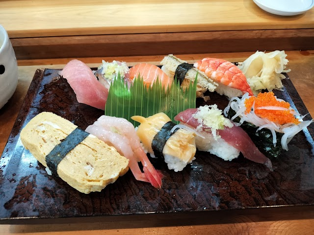
| 営業時間 | 月・水・木・金・土・日 11:00〜14:00 |
|---|---|
| 定休日 | 火曜 |
| 住所 | 茨城県つくば市春日４丁目１２−３ |
| 予約 | 可 — ☎ 029-855-1616 |
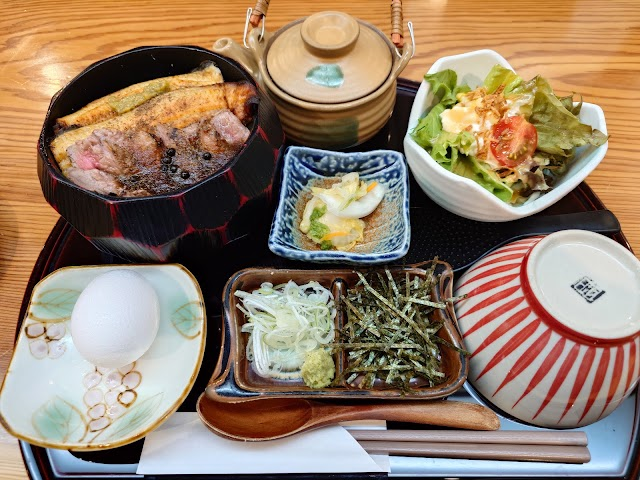
| 営業時間 | 月・火・木・金・土・日 11:30〜13:30, 17:30〜20:00 |
|---|---|
| 定休日 | 水曜 |
| 住所 | 茨城県つくば市桜３丁目１８−１ |
| 予約 | 可 — ☎ 029-869-8416 ／ 公式サイト |
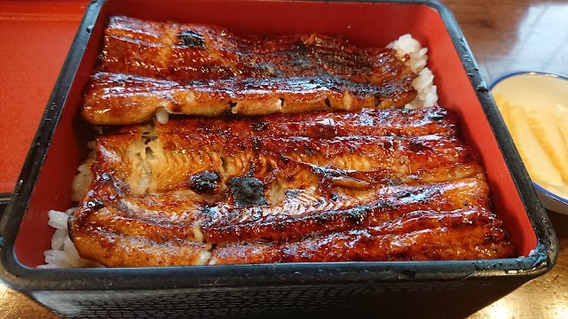
| 営業時間 | 水・木・金・土・日 11:00〜20:00 |
|---|---|
| 定休日 | 月・火曜 |
| 住所 | 茨城県つくば市妻木５−１ |
| 予約 | 要確認 — ☎ 029-852-4477 |
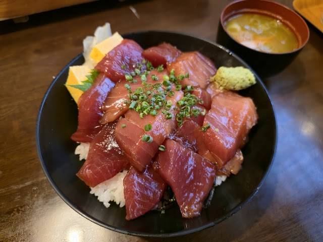
| 営業時間 | 月・木・金・土・日 11:00〜14:00, 17:00〜21:30 |
|---|---|
| 定休日 | 火・水曜 |
| 住所 | 茨城県つくば市上郷６８６０ |
| 予約 | 可 — ☎ 029-847-1567 ／ 公式サイト |
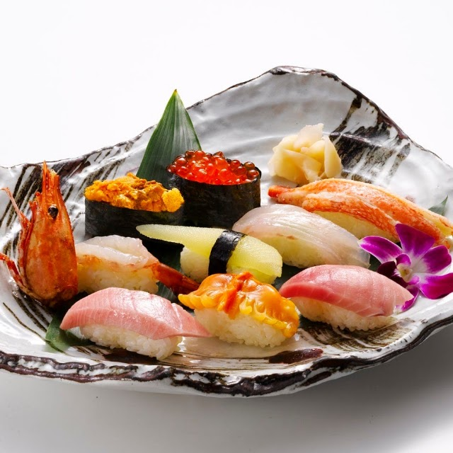
| 営業時間 | 月・火・水・木・日 11:00〜15:00, 17:00〜21:00 ／ 金・土 11:00〜15:00, 17:00〜21:30 |
|---|---|
| 定休日 | なし(要最終確認) |
| 住所 | 茨城県つくば市小野崎８８−２１ |
| 予約 | 可 — ☎ 029-855-6821 ／ 公式サイト |
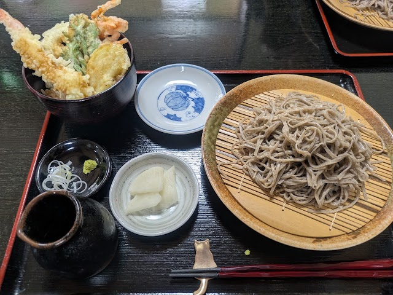
| 営業時間 | 月・木・金・土・日 11:30〜15:00 |
|---|---|
| 定休日 | 火・水曜 |
| 住所 | 茨城県つくば市竹園２丁目７−２７ INO レジデンス 1 階 |
| 予約 | 要確認 — ☎ 029-855-6156 ／ 公式サイト |
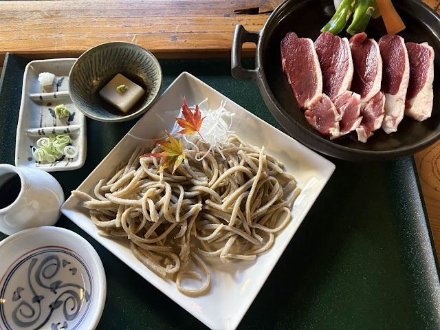
| 営業時間 | 月・火・水・金・土・日 11:00〜17:00 |
|---|---|
| 定休日 | 木曜 |
| 住所 | 茨城県つくば市筑波５５２−３ |
| 予約 | 要確認 — ☎ 029-850-8082 |
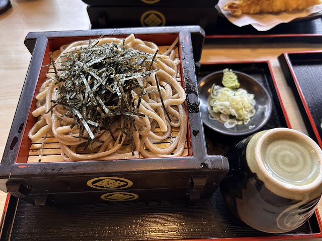
| 営業時間 | 火・木 11:30〜14:30, 17:30〜20:00 ／ 水 11:30〜14:30 ／ 金 11:30〜14:30, 17:30〜19:45 ／ 土・日 11:30〜15:00, 17:30〜19:45 |
|---|---|
| 定休日 | 月曜 |
| 住所 | 茨城県つくば市西岡４１８−２７６ |
| 予約 | 要確認 — ☎ 029-858-1508 ／ 公式サイト |
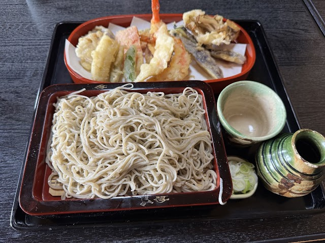
| 営業時間 | 月・水・木・金・土・日 11:30〜14:00, 17:00〜20:00 |
|---|---|
| 定休日 | 火曜 |
| 住所 | 茨城県つくば市上ノ室２１６６−６ |
| 予約 | 可 — ☎ 029-857-7911 |
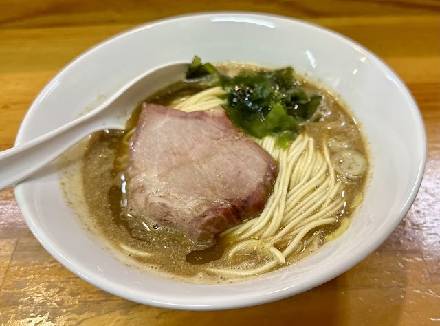
| 営業時間 | 月・火・水・木・金・土 11:30〜14:00 |
|---|---|
| 定休日 | 日曜 |
| 住所 | 茨城県つくば市天久保２丁目９−２ |
| 予約 | 要確認 — ☎ 080-3080-9955 ／ 公式サイト |
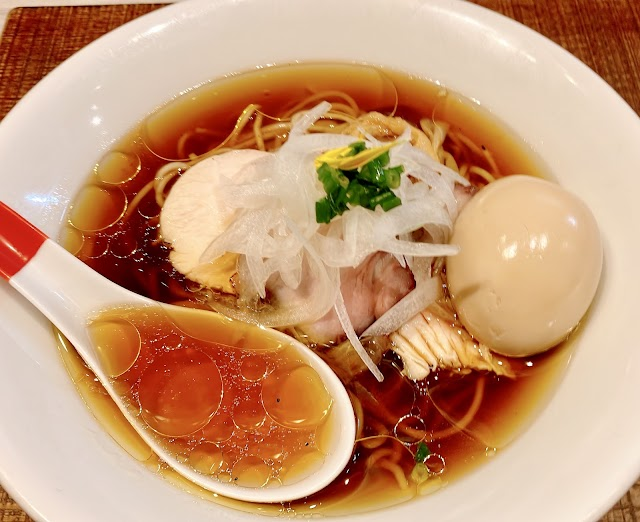
| 営業時間 | 月・火・水・金・土・日 11:00〜14:30, 17:30〜20:30 |
|---|---|
| 定休日 | 木曜 |
| 住所 | 茨城県つくば市榎戸６８５−５ |
| 予約 | 要確認 — 公式サイト |
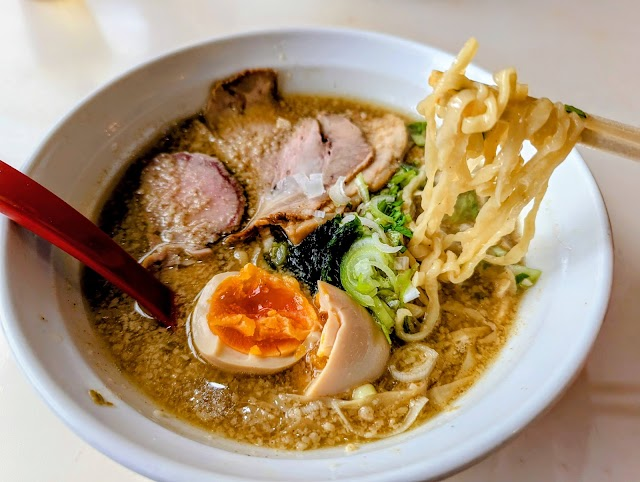
| 営業時間 | 火・水・木・金・土・日 11:30〜14:30, 17:30〜21:00 |
|---|---|
| 定休日 | 月曜 |
| 住所 | 茨城県つくば市栗原２８５７−８ |
| 予約 | 要確認 — ☎ 029-886-3833 ／ 公式サイト |
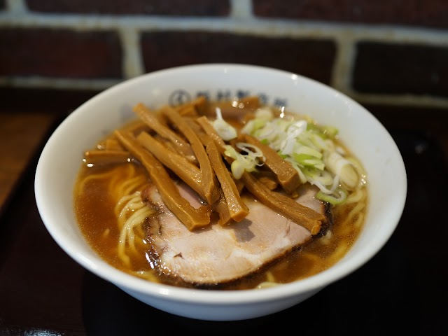
| 営業時間 | 11:00〜完売終了（約120食） |
|---|---|
| 定休日 | 水曜、第2・第4火曜 |
| 住所 | 茨城県つくば市要 元猿壁字弥平太前772-1 |
| 予約 | 要確認 — 公式サイト |
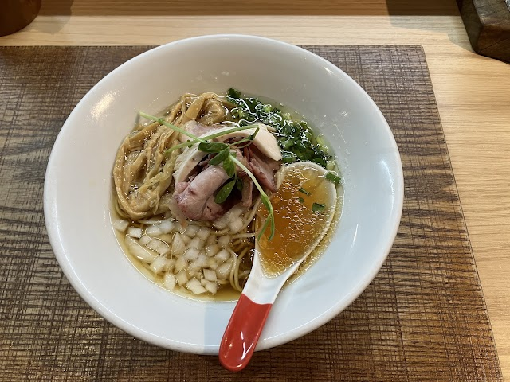
| 営業時間 | 月・火・水・金・土・日 11:30〜14:30, 18:00〜21:30 |
|---|---|
| 定休日 | 木曜 |
| 住所 | 茨城県つくば市天久保２丁目６−１ |
| 予約 | 要確認 — 公式サイト |
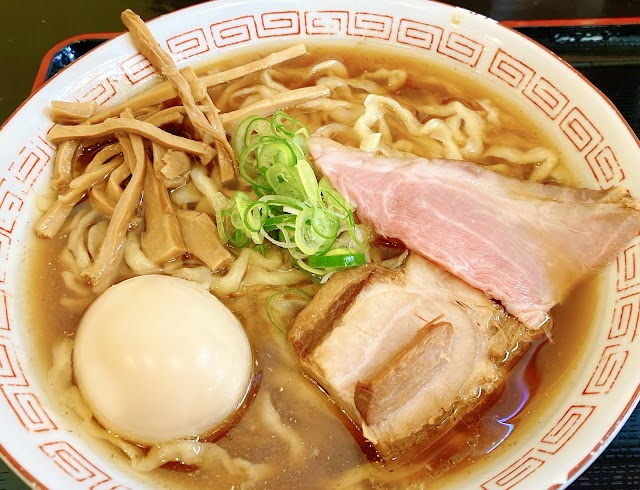
| 営業時間 | 月・火・木・金・土・日 7:00〜17:00 |
|---|---|
| 定休日 | 水曜 |
| 住所 | 茨城県つくば市沼田300番地 |
| 予約 | 要確認 — 公式サイト |
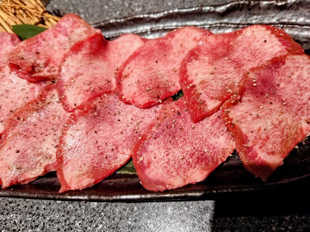
| 営業時間 | 火・水・木・金 11:30〜14:00, 17:00〜23:00 ／ 土 11:30〜23:00 ／ 日 11:30〜22:00 |
|---|---|
| 定休日 | 月曜 |
| 住所 | 茨城県つくば市天久保１丁目１２−７ |
| 予約 | 可 — ☎ 029-851-2989 ／ 公式サイト |
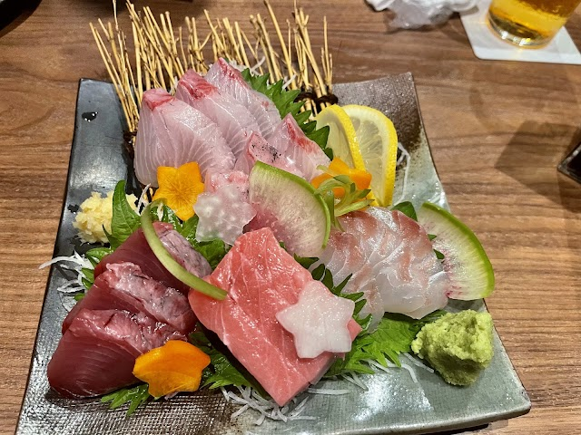
| 営業時間 | 月・火・水・木・金・土 17:00〜0:00 |
|---|---|
| 定休日 | 日曜 |
| 住所 | 茨城県つくば市吾妻１丁目8−１０ BiViつくば ３F |
| 予約 | 可 — ☎ 050-5488-5238 ／ 公式サイト |
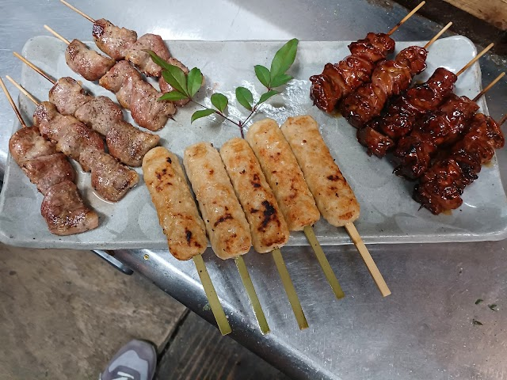
| 営業時間 | 火・水・木・金・土・日 17:00〜22:00 |
|---|---|
| 定休日 | 月曜 |
| 住所 | 茨城県つくば市下広岡３５３−１ |
| 予約 | 可 — ☎ 029-857-7225 ／ 公式サイト |
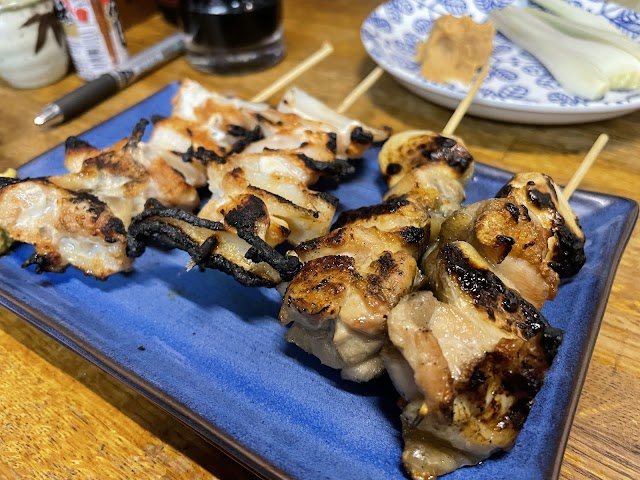
| 営業時間 | 月・火・水・木・金・土 17:00〜23:00 |
|---|---|
| 定休日 | 日曜 |
| 住所 | 茨城県つくば市竹園２丁目１０−１ |
| 予約 | 可 — ☎ 029-851-1886 |
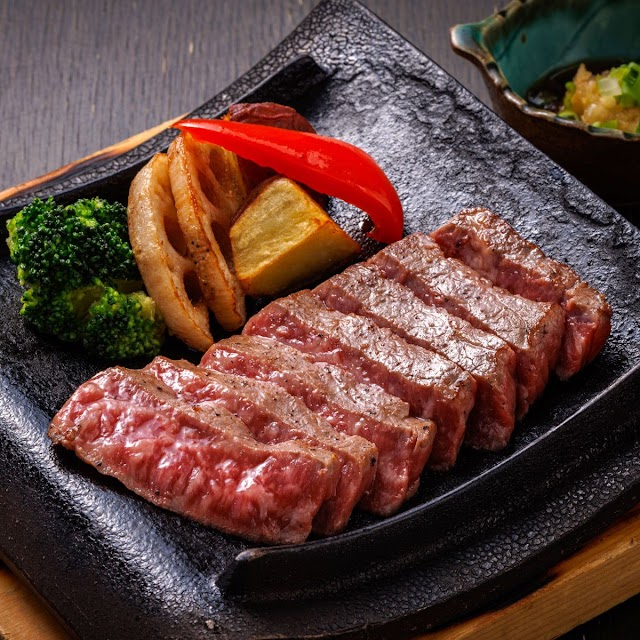
| 営業時間 | 月・火・水・木・金・土・日 17:00〜0:00 |
|---|---|
| 定休日 | なし(要最終確認) |
| 住所 | 茨城県つくば市竹園１丁目９−２ デイズタウンつくば 1F |
| 予約 | 可 — ☎ 029-858-3228 ／ 公式サイト |
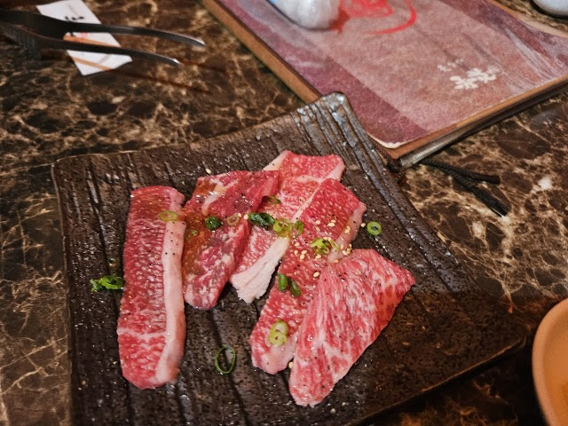
| 営業時間 | 月・火・水・木・金・土・日 11:30〜14:00, 17:00〜21:30 |
|---|---|
| 定休日 | なし(要最終確認) |
| 住所 | 茨城県つくば市東新井１８−７ |
| 予約 | 可 — ☎ 0120-892-917 ／ 公式サイト |
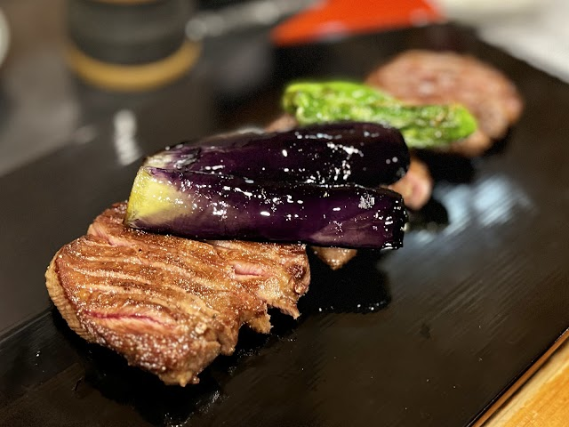
| 営業時間 | 月・火・水・木・金・土 17:00〜23:30 |
|---|---|
| 定休日 | 日曜 |
| 住所 | 茨城県つくば市研究学園５丁目8−３ 1F |
| 予約 | 可 — ☎ 029-854-1116 ／ 公式サイト |
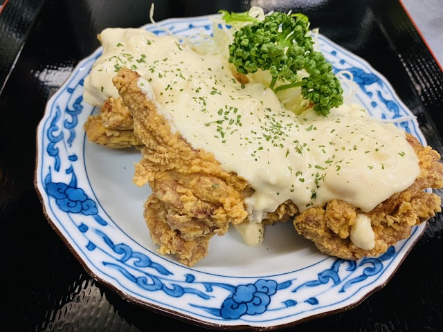
| 営業時間 | 月・火・木・金・土・日 11:30〜14:00, 17:00〜22:00 |
|---|---|
| 定休日 | 水曜 |
| 住所 | 茨城県つくば市上横場２０１１−１９ |
| 予約 | 可 — ☎ 029-838-1827 ／ 公式サイト |
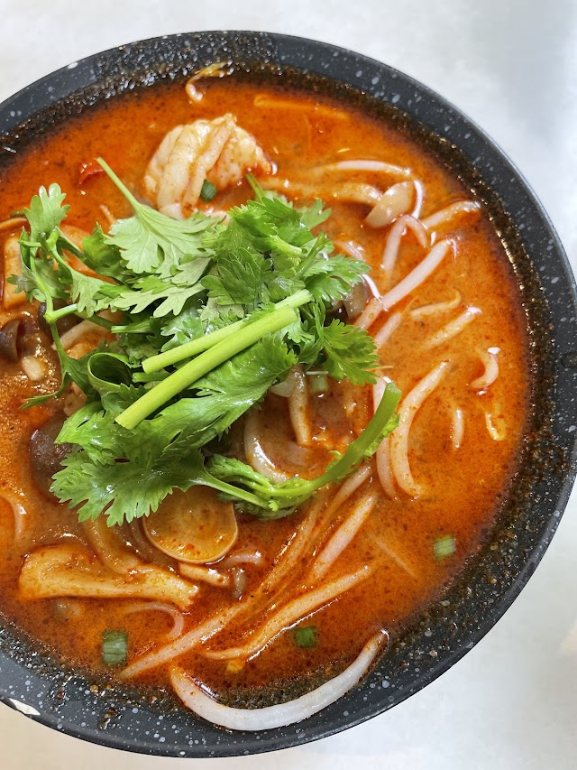
| 営業時間 | 月・水・木・金・土・日 11:00〜15:00, 17:00〜21:00 |
|---|---|
| 定休日 | 火曜 |
| 住所 | 茨城県つくば市南中妻８２６−５ |
| 予約 | 要確認 — ☎ 029-819-0906 ／ 公式サイト |
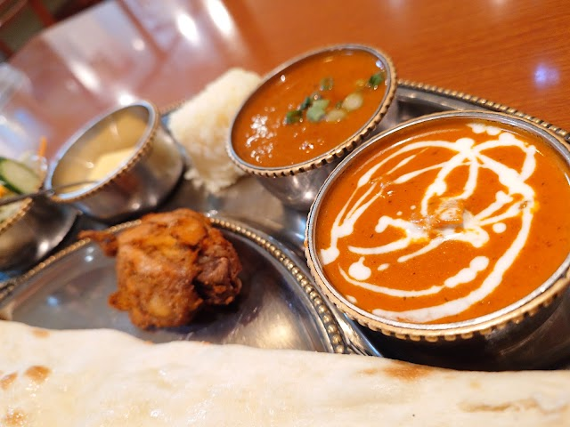
| 営業時間 | 月・火・水・木・金・土・日 11:00〜23:00 |
|---|---|
| 定休日 | なし(要最終確認) |
| 住所 | 茨城県つくば市天久保３丁目１０−１６ 横田ハイツＧ棟 |
| 予約 | 可 — ☎ 029-828-5540 ／ 公式サイト |
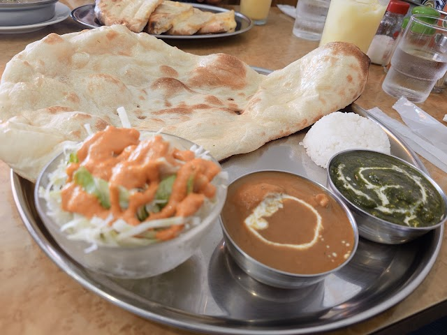
| 営業時間 | 月・火・水・木・金 11:30〜15:00, 17:30〜22:00 ／ 土・日 11:00〜16:00, 17:30〜22:00 |
|---|---|
| 定休日 | なし(要最終確認) |
| 住所 | 茨城県つくば市竹園２丁目６−１ |
| 予約 | 可 — ☎ 029-856-5640 |
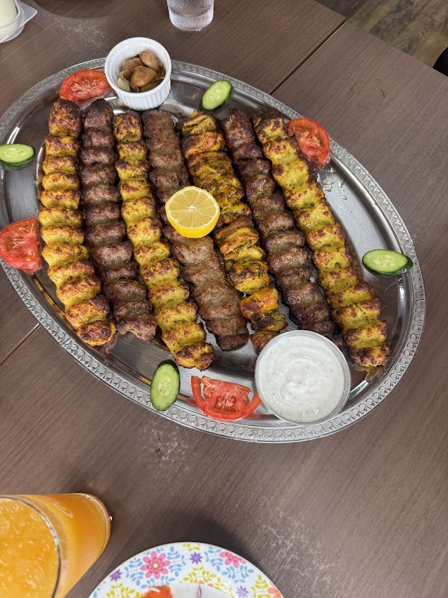
| 営業時間 | 月・火・木・金・土・日 11:00〜23:00 |
|---|---|
| 定休日 | 水曜 |
| 住所 | 茨城県つくば市天久保２丁目６−８ |
| 予約 | 可 — ☎ 029-845-2654 ／ 公式サイト |
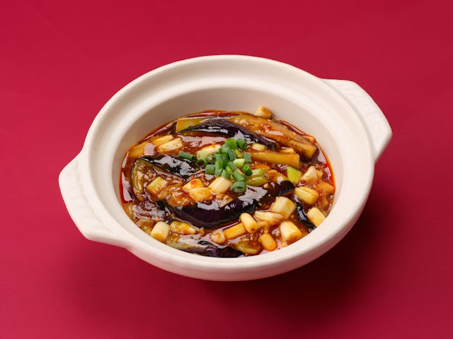
| 営業時間 | 火・水・木・金・土・日 11:00〜15:00, 17:00〜22:00 |
|---|---|
| 定休日 | 月曜 |
| 住所 | 茨城県つくば市天久保１丁目6−１５ 細田ビル D101 |
| 予約 | 可 — ☎ 029-811-6589 ／ 公式サイト |
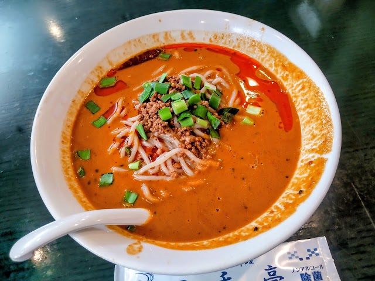
| 営業時間 | 月・火・水・木・金・土・日 11:00〜15:30, 17:00〜21:30 |
|---|---|
| 定休日 | なし(要最終確認) |
| 住所 | 茨城県つくば市東平塚８９４−３ |
| 予約 | 可 — ☎ 050-1784-8701 ／ 公式サイト |
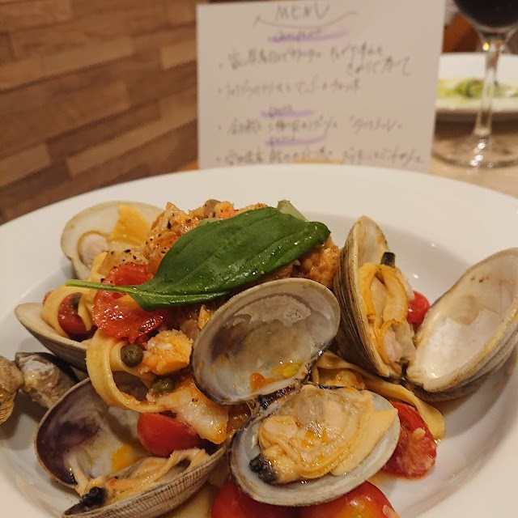
| 営業時間 | 月・火・水・木・金・土 11:30〜14:30, 17:30〜21:30 |
|---|---|
| 定休日 | 日曜 |
| 住所 | 茨城県つくば市花畑２丁目９−１５ |
| 予約 | 可 — ☎ 029-864-4555 ／ 公式サイト |
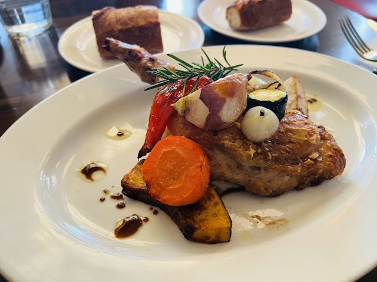
| 営業時間 | 水・木・金・土・日 11:30〜14:30, 18:00〜21:30 |
|---|---|
| 定休日 | 月・火曜 |
| 住所 | 茨城県つくば市松野木１００−１１ |
| 予約 | 可 — ☎ 029-879-8719 ／ 公式サイト |
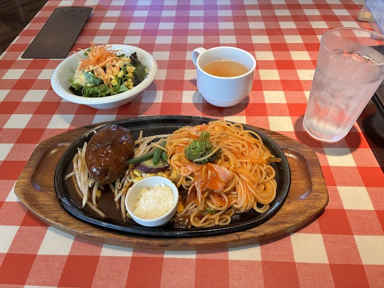
| 営業時間 | 月・火・水・金・土・日 11:00〜21:00 |
|---|---|
| 定休日 | 木曜 |
| 住所 | 茨城県つくば市二の宮２丁目１４−１２ ウエストハウス |
| 予約 | 可 — ☎ 029-851-9211 ／ 公式サイト |
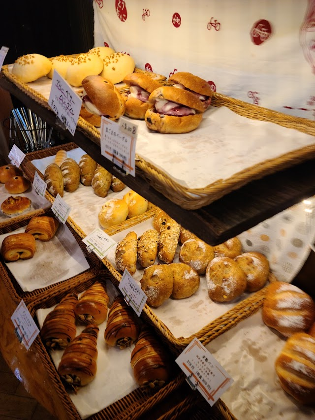
| 営業時間 | 水・木・金・土・日 10:00〜17:00 |
|---|---|
| 定休日 | 月・火曜 |
| 住所 | 茨城県つくば市金田３８−１ |
| 予約 | 可 — ☎ 029-857-4118 ／ 公式サイト |
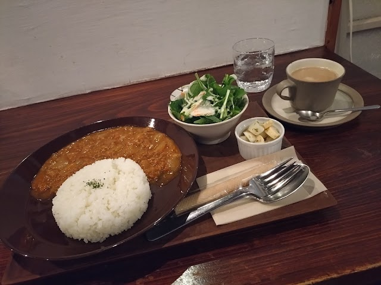
| 営業時間 | 月・水・木・土・日 11:00〜18:00 ／ 金 12:00〜18:00 |
|---|---|
| 定休日 | 火曜 |
| 住所 | 茨城県つくば市北条１８３ |
| 予約 | 要確認 — 公式サイト |
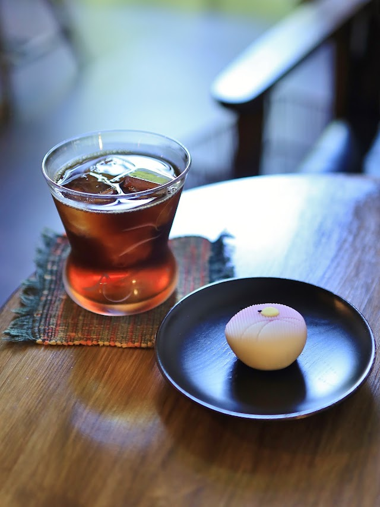
| 営業時間 | 月・火・木・金 11:00〜19:00 ／ 土・日 10:00〜18:00 |
|---|---|
| 定休日 | 水曜 |
| 住所 | 茨城県つくば市吉瀬１６７９−１ |
| 予約 | 要確認 — ☎ 029-857-2181 ／ 公式サイト |
| 営業時間 | 火・水・木・金・土・日 6:30〜18:00 |
|---|---|
| 定休日 | 月曜 |
| 住所 | 茨城県つくば市松野木１５２−４０ |
| 予約 | 要確認 — ☎ 029-860-2636 ／ 公式サイト |
| 営業時間 | 火・水・木・金・土 10:00〜19:00 ／ 日 10:00〜18:00 |
|---|---|
| 定休日 | 月曜 |
| 住所 | 茨城県つくば市水堀５８７−５４ |
| 予約 | 要確認 — ☎ 029-863-3767 ／ 公式サイト |
| 営業時間 | 月・火・木・金・土・日 10:00〜20:00 |
|---|---|
| 定休日 | 水曜 |
| 住所 | 茨城県つくば市東光台２丁目１０−１５ プラザ東光 |
| 予約 | 要確認 — ☎ 029-869-6661 ／ 公式サイト |
| 営業時間 | 火・水・木・金 10:00〜14:00, 15:00〜18:00 ／ 土・日 9:00〜17:00 |
|---|---|
| 定休日 | 月曜 |
| 住所 | 茨城県つくば市千現１丁目15−１ オギハラコーポ 103 |
| 予約 | 要確認 — ☎ 029-875-8370 ／ 公式サイト |
| 営業時間 | 水・木・金・土・日 9:00〜18:00 |
|---|---|
| 定休日 | 月・火曜 |
| 住所 | 茨城県つくば市上郷２２２３−１ |
| 予約 | 可 — ☎ 029-811-6275 ／ 公式サイト |
本ガイドは個人利用目的で作成。掲載情報は2026年8月時点の調査に基づく。写真出典: Google Maps投稿写真(©各投稿者/Google)。